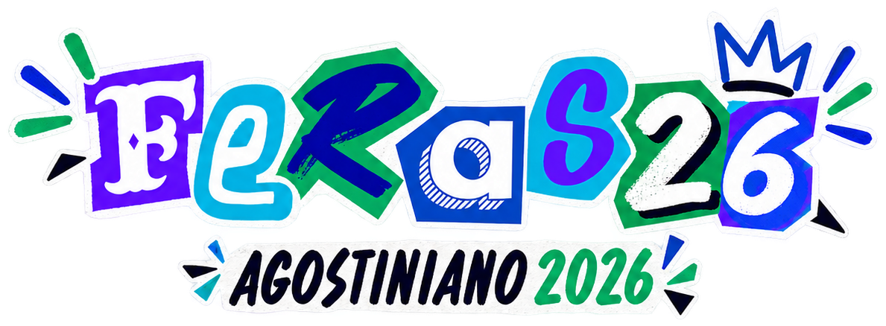
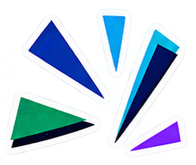
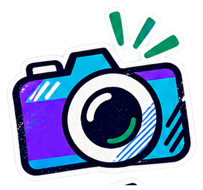
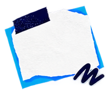
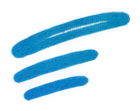
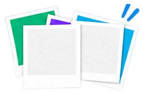

PROFESSORESAS AULAS
AS AULAS
E TUDO ALÉM DELAS.
Tem explicação que ficou. Tem frase que a turma não esquece. Queremos ouvir essas histórias de quem esteve na sala, não inventá-las.


O TERCEIRÃO DO AGOSTINIANO · 2026
Pra rever as fotos, encontrar quem estava lá e lembrar até das coisas pequenas.
PASSA TANTA VEZ QUE NEM PENSA.
Era onde a gente se encontrava antes de ir pra sala.
O portão, o pátio, os corredores, as salas. Os mesmos caminhos o ano inteiro, com histórias diferentes todos os dias.
Trotes, Recreaço, Day-Off, Festa Junina. Em cada pasta aparece um pedaço do ano.
Abrindo os capítulos…
Outras só fazem sentido pra quem tava lá. O arquivo vai ter espaço pras duas.


ÁLBUM EM
Estamos selecionando as fotos e os vídeos que poderão fazer parte do memorial.
Tem explicação que ficou. Tem frase que a turma não esquece. Queremos ouvir essas histórias de quem esteve na sala, não inventá-las.
Na entrada, na limpeza, na cantina, na secretaria, nos corredores. Essas pessoas também fazem parte do que a gente lembra da escola.
3º A, B, C, D e E. Tem coisa que foi de todo mundo. E tem muita coisa que só uma sala vai entender.

Quando a gente conseguir juntar essas histórias, elas também vão morar aqui.
Ainda tem muita foto pra escolher, muito vídeo pra encontrar e muita história pra ouvir. A gente vai montando, aos poucos, pra ter onde voltar.
VOLTAR AO COMEÇO